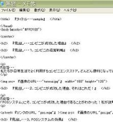

{kind=link}
{kind=link}
{kind=link}
{kind=link}
{kind=link}
{kind=link}
1つ目は、Webページが入っているフォルダを共有フォルダに移動させ、生徒にフォルダの場所を指示して公開する方法です。
２つ目は、Webサーバに転送する方法です。FTPソフトやFFFTPソフトなどを使って、作成したファイルを Webサーバに転送します。Webページに画像などを張り込んでいる場合は、画像ファイルも転送します。そのためには、ページをアップさせる場所のアドレスが必要です。
Webページに直接触れることで、パソコンやインターネット、Webに関心をもつようすることができ、それらに関する理解が深まることを目的とする。また、Webページでは、文書だけでなく、静止画や動画を扱うことができるので、説明が複雑になる部分は静止画や動画を使って分かりやすく教えることができる。
パソコン(タグ辞典、HTMLやスタイルシート関連の本があればより充実した内容のＷｅｂページが制作できる)
|
１．ここではテンプレートを使ったWebページの作り方を説明します。まず、テンプレートを用意します。テンプレートはこちら。ページ左上のツールバーから「編集」をクリックし、「すべて選択」を選択します。すると、ページ上のテキストがすべて選択された状態になります。次に、もう一度「編集」をクリックして、「コピー」を選択します。 |
| ２．次に、メモ帳を用意します。｢スタート」をクリックし、「メモ帳」を開きます。 | |
|  | ３．｢メモ帳」を開いて画面上部にあるツールバーから「編集」をクリック、「貼り付け｣を選択します。すると、左の図のようになります。 |
| ４．実際にHTMLを使ってWebページを制作します。今回、貼り付けしたものはすでに、ソースとしてある程度出来上がっています。使用方法は、『』(二重かぎかっこ）で囲まれた部分を必要に応じて変更するだけです。二重かぎかっこも消してかまいません。それ以外の部分はタグでWebページの外観を設定しています。変更しても大丈夫ですが、Webページ制作初心者の方は、変更せずにこのまま使用することをお奨めします。ＨＴＭＬに関する説明はこちら | |
| ５．出来上がったソースを保存します。画面左上のツールバーから「ファイル」をクリックし、「名前を付けて保存」を選択します。保存する場所はあらかじめ用意しておいたほうがいいでしょう。そのために、まず、「保存する場所」を選択します。これはどこでもかまいませんが、ここでは「デスクトップ」とします。選択すると、その場所にあるファイルやフォルダが表示されます。その横で、右クリックして、「新規作成」を選択し、「フォルダ」を選択します。すると、新しいフォルダができます。「新しいフォルダ」の部分をけして、フォルダ名を付けます。 | |
| ６．先程作ったフォルダを開き、そこにソースファイルを保存します。保存する時、｢ファイル名」を「・・・（ファイル名）.html」とします。ただし、ファイル名は半角英数で書いてください。 | |
| ７．保存したフォルダを開くと、右の図の赤色の枠線で囲まれた部分のように、ソースファイルが保存されています。これを開くと、 Webページをブラウザで見ることができます。これで、製作過程は終了です。 | |
| ８．完成したWebページの公開方法は色々あります。ここでは代表的な方法を2つ紹介します。 1つ目は、Webページが入っているフォルダを共有フォルダに移動させ、生徒にフォルダの場所を指示して公開する方法です。 ２つ目は、Webサーバに転送する方法です。FTPソフトやFFFTPソフトなどを使って、作成したファイルを Webサーバに転送します。Webページに画像などを張り込んでいる場合は、画像ファイルも転送します。そのためには、ページをアップさせる場所のアドレスが必要です。 |